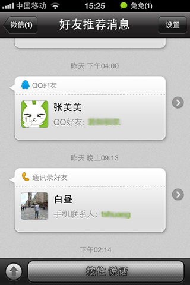
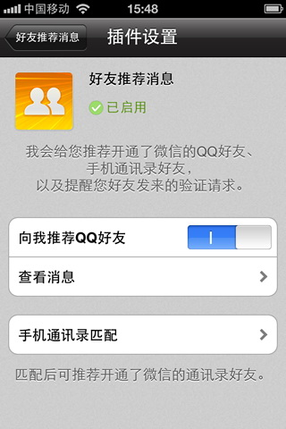
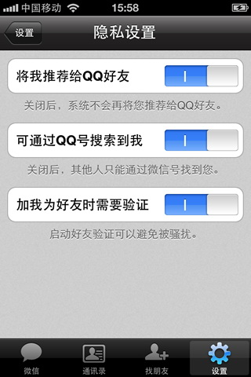
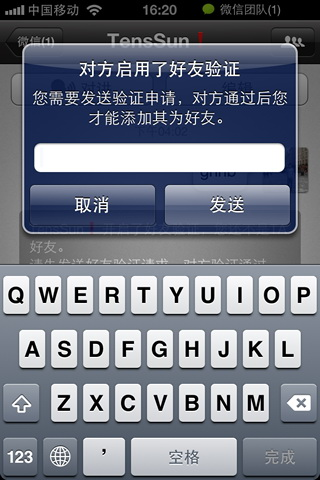
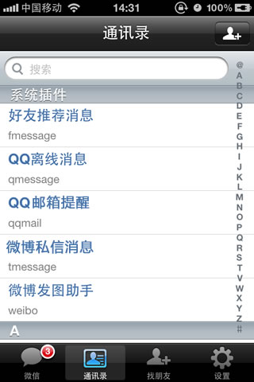
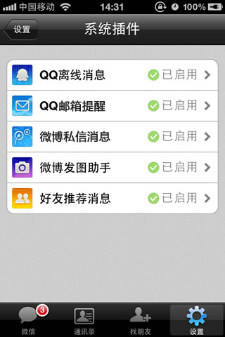
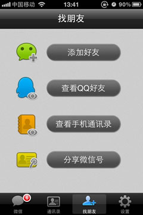
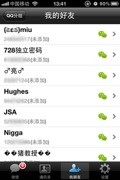
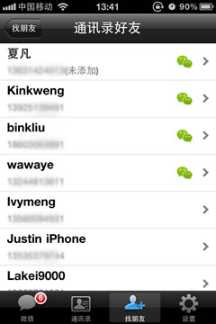

微信 2.2 for iPhone(语音版) 全新发布
发布日期：2011-06-30
发布版本：微信 2.2 for iPhone(语音版) 点击下载 (或到手机App Store搜索“微信”)
微信是一款跨平台的通讯工具，支持单人、多人参与，通过手机网络发送语音、图片、文字。带给您全新的消息体验，您可以使用微信随时随地联系身边的朋友。支持ios、Android、Symbian等多种平台手机。
iPhone 2.2 语音版本增加以下主要功能：
1、QQ离线消息：当您的QQ处于离线状态时，微信帮您接收QQ消息，还可以回复文字和语音消息喔。
让您时刻保持和QQ好友联系。
2、好友推荐消息：向您推荐来自您QQ好友和手机通讯录好友，还向您提醒好友验证请求。
 3、好友验证：当您打开了好友验证设置后，任何人添加您为好友，都必须先向您发送好友验证请求，避免不必要的骚扰。
 4、插件管理：在设置界面中加入系统插件管理入口，让您快速管理微信的插件。
 5、查看正在使用微信的好友：让您找出QQ、手机通讯录正在使用微信的好友。
  发布版本：微信 2.2 for iPhone(语音版) 点击下载 (或到手机App Store搜索“微信”)
如果您想了解更多详情,或给我们反馈,可以通过以下方式联系我们：
官方网站：http://weixin.qq.com
腾讯微博：@weixin
微信号 ：weixin